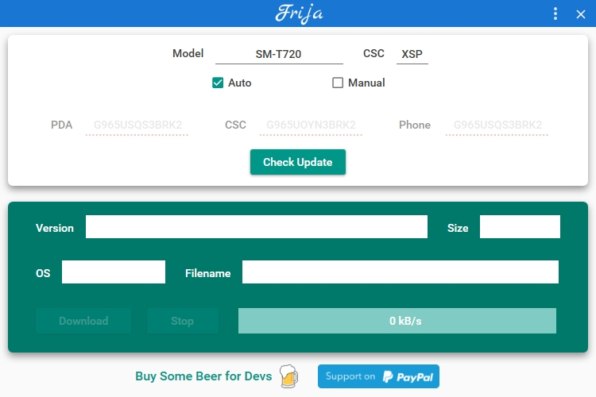
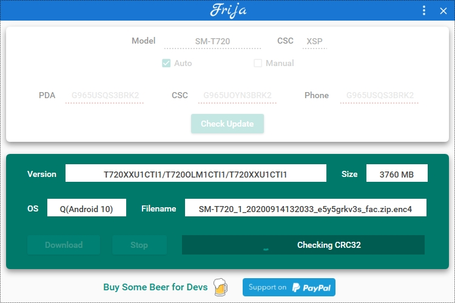
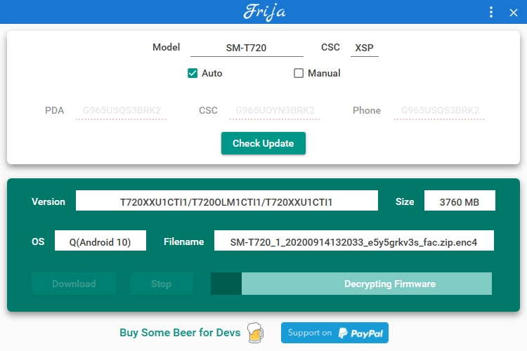
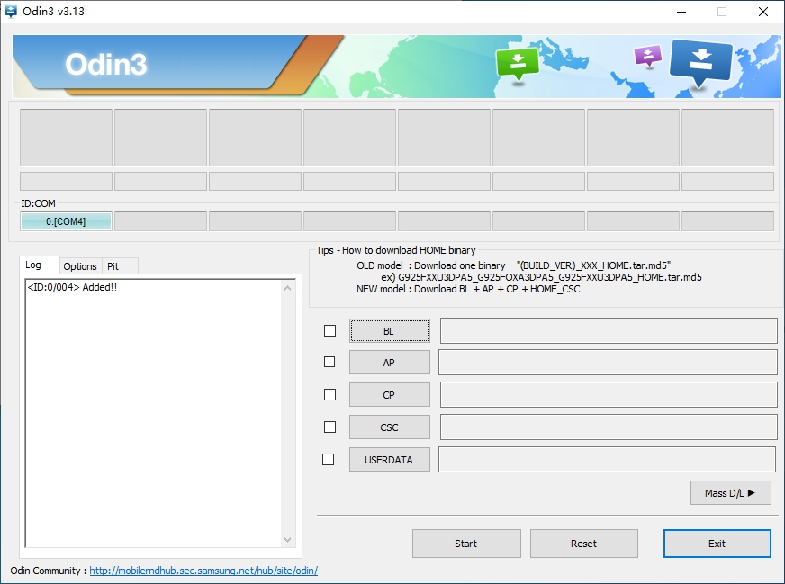
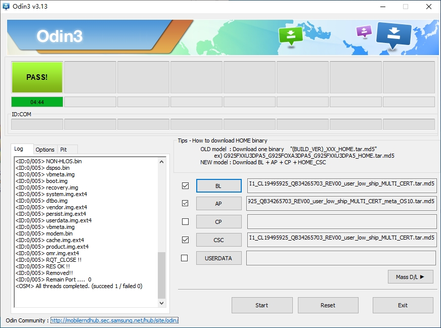
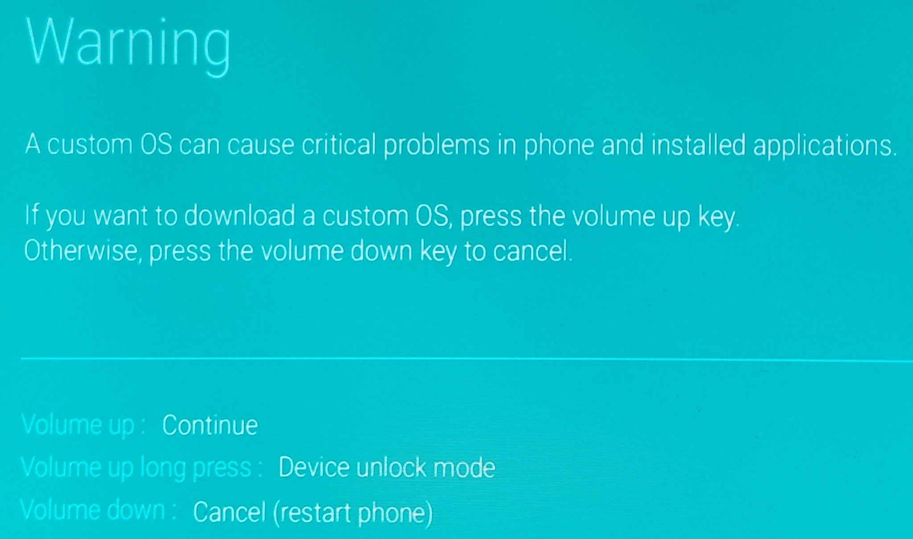

Samsung Galaxy Tab S5e Optimization
Fri 16 October 2020Reference : Debloat via adb shell without root
在dialer中输入*#1234#，获得作业系统的讯息Taiwan (BRI)
Version
AP : T720XXU1CTI1
CSC : T720OLM1CTI1
Model : SM-T720
download the latest samsung firmware with this app(windows 10 system required) frija

if file has been downloaded, the CRC32 Checking will automatically start.

once finishing CRC32 Checking and the result is matching, then

download odin from here samsungodin, samsung pc driver from here samsungodin


active s5e's adb shell.
[root@localhost ~]# adb shell
gts4lvwifi:/ $
to show all app's names
gts4lvwifi:/ $ pm list packege
to disable an application.
gts4lvwifi:/ $ pm disable-user --user 0 package's name
to enable an disabled application.
gts4lvwifi:/ $ pm enable package's name
| Num | App Name | Package Full Name |
|---|---|---|
| 1 | bbc | com.samsung.android.bbc.bbcagent |
| 2 | bixby | com.samsung.android.app.settings.bixby com.samsung.systemui.bixby2 com.samsung.android.bixby.service com.samsung.android.bixby.agent com.samsung.android.bixbyvision.framework com.samsung.android.bixby.wakeup com.samsung.android.bixby.agent.dummy |
| 3 | Contact | com.samsung.android.app.contacts |
| 4 | Dialer | com.samsung.android.dialer com.samsung.android.dialer |
| 5 | duo | com.google.android.apps.tachyon |
| 6 | galaxy store | com.sec.android.widgetapp.samsungapps com.sec.android.app.samsungapps |
| 7 | Game | com.samsung.android.game.gamehome com.samsung.android.game.gametools com.samsung.android.game.gos |
| 8 | Message | com.samsung.android.messaging |
| 9 | netflix | com.netflix.mediaclient com.netflix.partner.activation |
| 10 | Onedrive | com.microsoft.skydrive |
Note
进入传说中的挖煤模式:
adb reboot bootloader- 完全关机的状态下，同时按住
电源键+音量加+音量减
进入recovery模式:
adb reboot recovery- 完全关机的状态下，按住
电源键，待屏幕点亮后点按一下音量减
unlock/lock bootloader[OEM]
- 事先连接上usb-type c数据线，接着将平板电脑关机，等屏幕黑掉之后快速按住
电源键+音量加+音量减，就会出现
